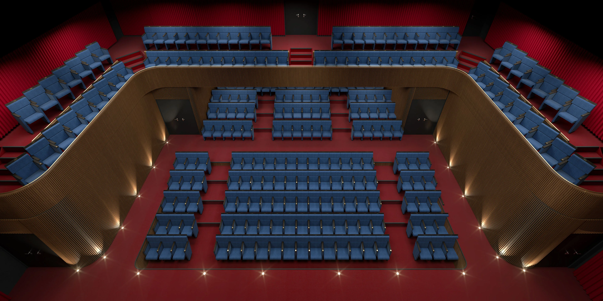
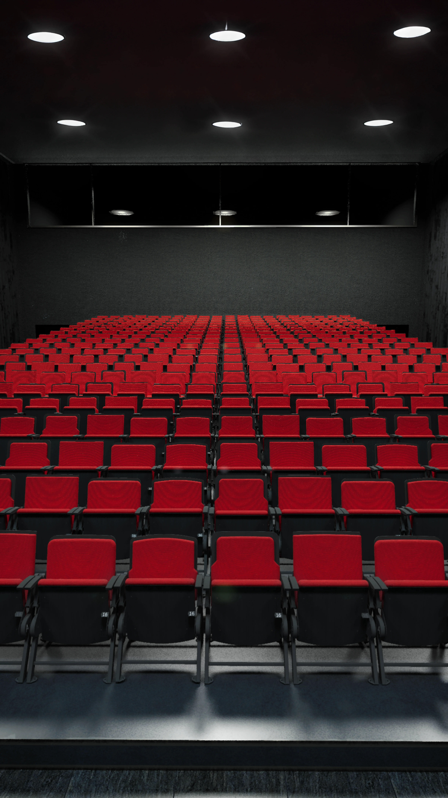
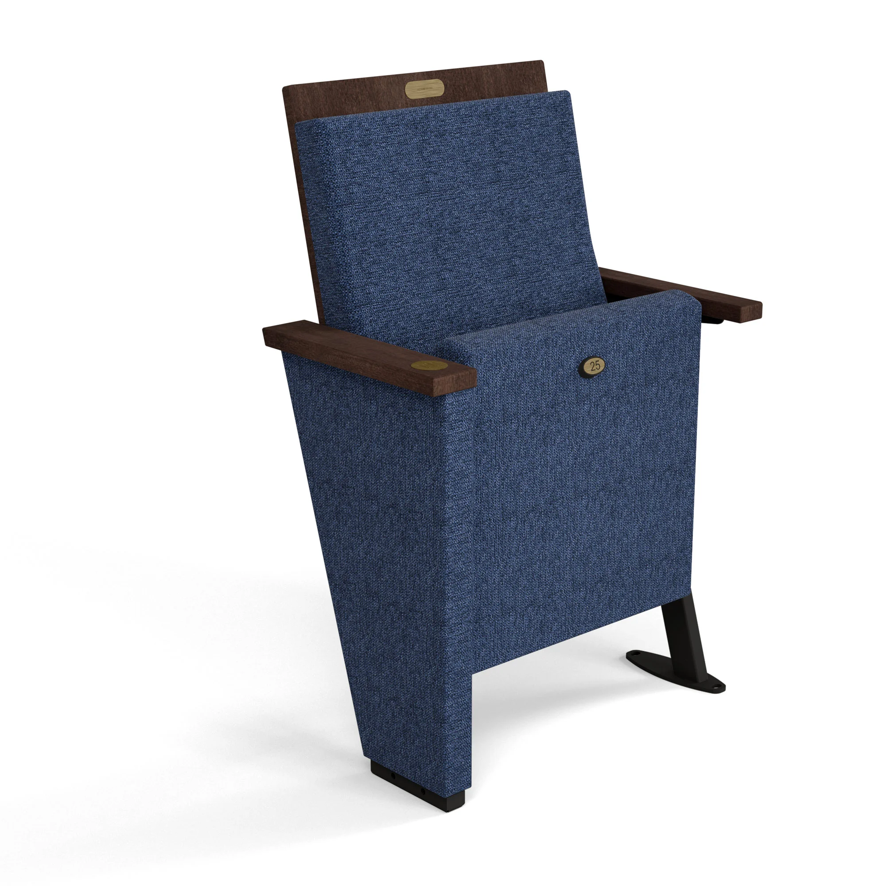
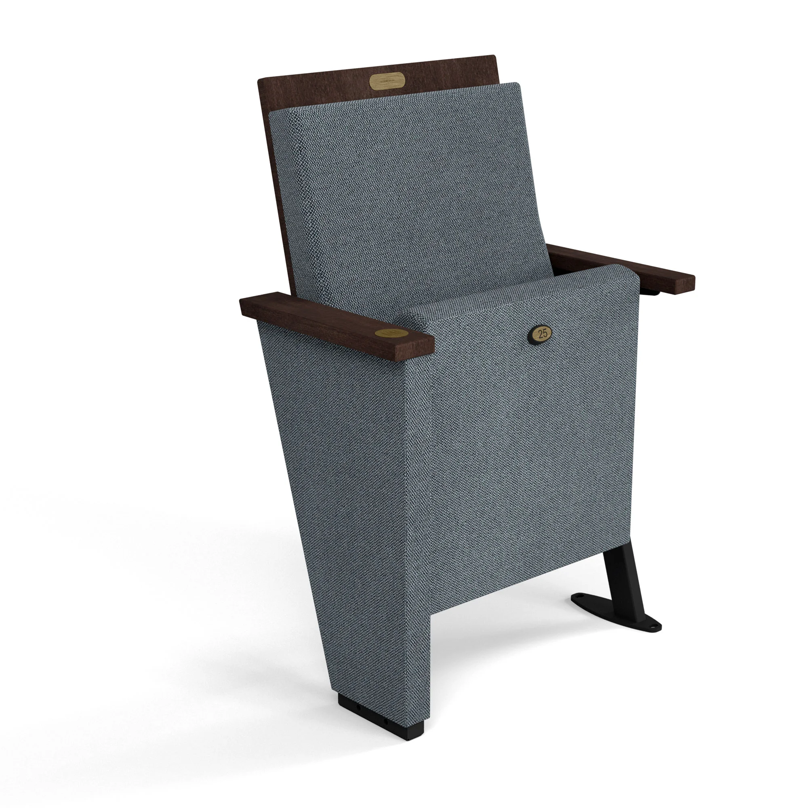
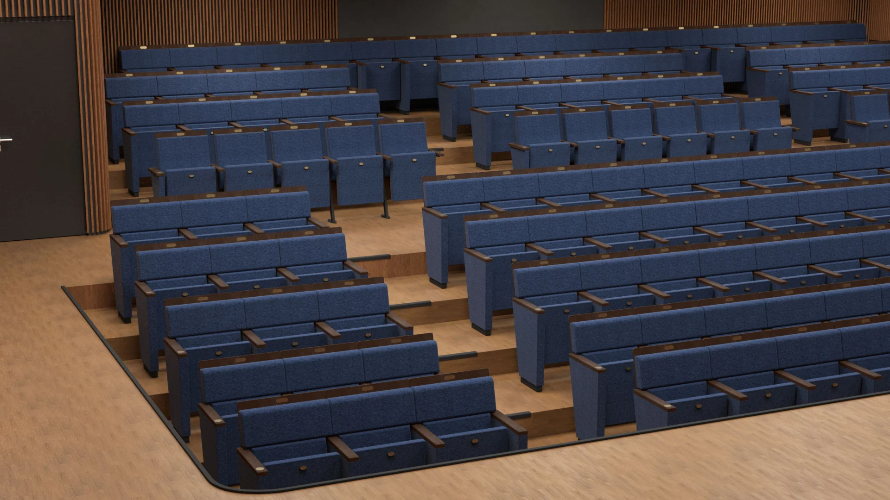
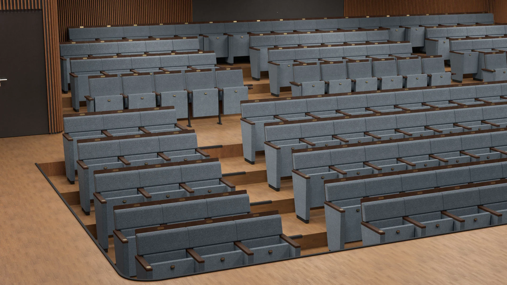
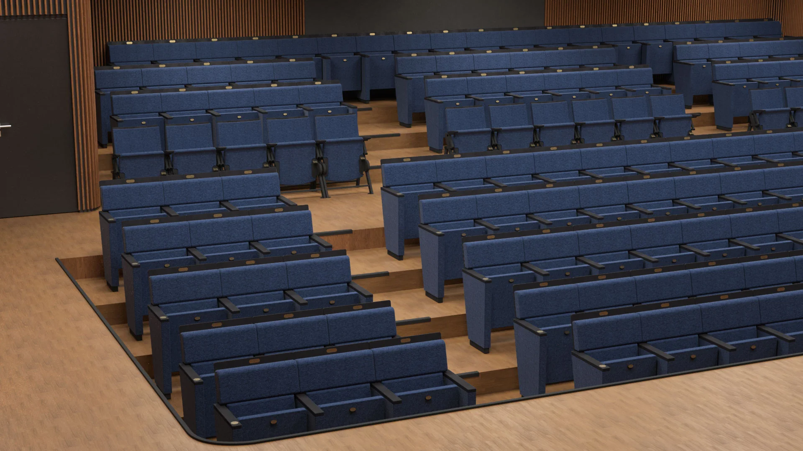
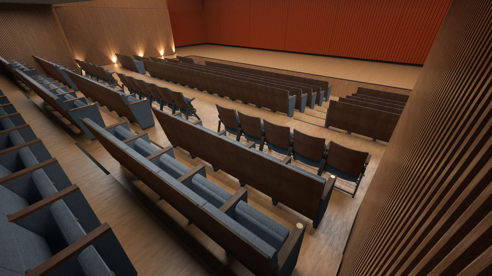
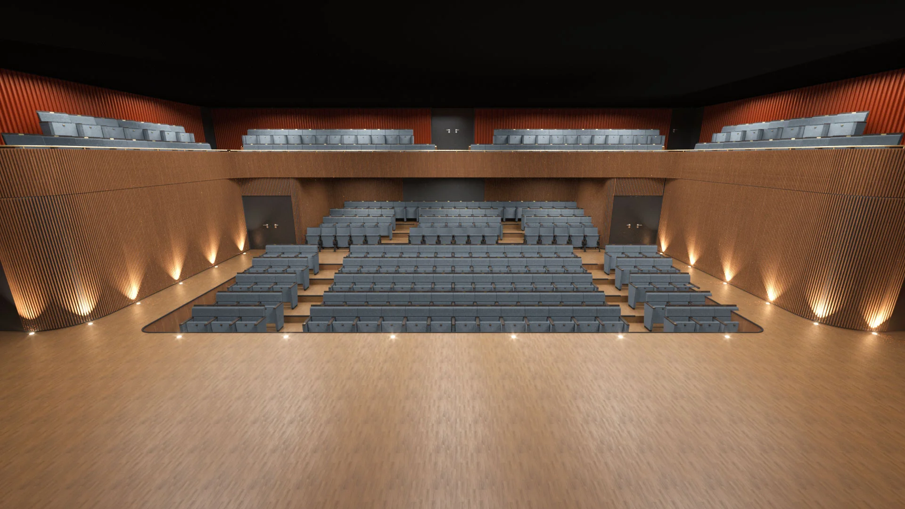
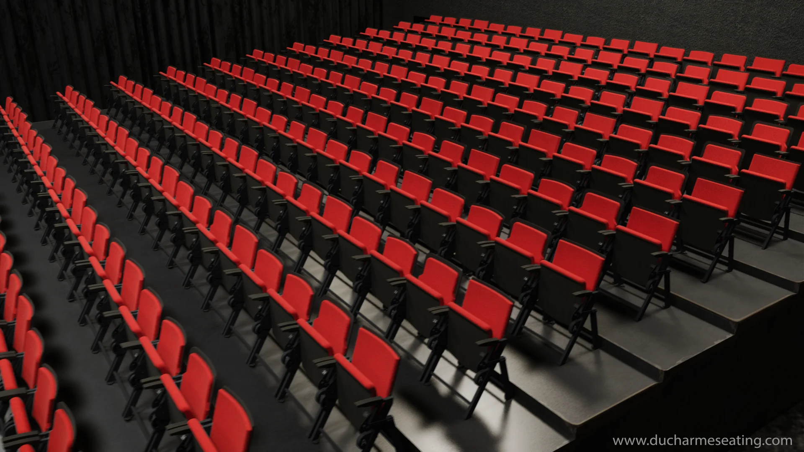

DUCHARME SEATING
Large-scale venue visualization
Colaboré con Ducharme Seating para crear un catálogo digital completo de sus butacas premium para auditorios y teatros. El proyecto implicó visualizar la precisión de cada producto y su integración ambiental a gran escala para recintos de alta gama.



Desarrollé un flujo de trabajo 3D modular para renderizar eficientemente múltiples variaciones de color y materiales, proporcionando a la marca activos versátiles para cualquier licitación de ventas.






Gestioné entornos complejos con miles de elementos de alta poligonalidad (filas de asientos) manteniendo la integridad de la iluminación y los materiales fotorrealistas.

Se elaboraron animaciones técnicas para demostrar la distribución espacial y la mecánica de los asientos, satisfaciendo la necesidad del cliente de una forma interactiva de presentar los planos del recinto.